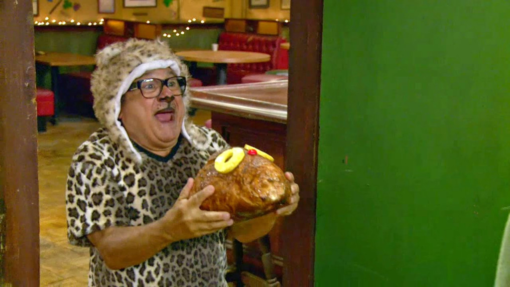

Milk Steak
My Favorite Food

You'll never drink milk without steak again.
Ingredients
- Whole Milk - 2 cups
- Steak - 8 ounces
- Honey - 1/4 cup
- Cinnamon - 1/2 teaspoon
- Nutmeg - 1/2 teaspoon
- Vanilla Extract - 1 teaspoon
If you're feeling fancy, consider pairing with
1/2 cup of your local liquor store's finest jelly beans
Directions
- Add the milk, honey, cinnamon, nutmeg, and vanilla to a medium sized saucepan.
- Heat up the mixture, stirring until the honey has completely dissolved.
- Bring the mixture to a boil.
- Carefully place the steak in the boiling milk mixture.
- Bring the liquid back to the boil and reduce the heat so that the milk is simmering.
- Cook this medium-sized steak for five minutes on one side, stirring the top occasionally to stop a skin forming on the milk.
-
Turn the steak over and cook for a further five minutes on the other side.
- Check how well cooked your steak is. If you're after authenticity, the steak should be cooked "over hard" and so should not be pink at all.
- Allow the steak to chill for a few minutes, its been through a lot
Bonus Step
- Garnish with jelly beans.
Here is the first time someone ever tried this fabulous recipe.